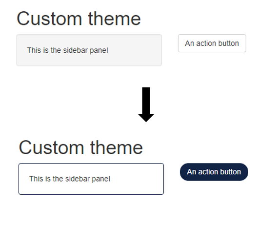

{fresh} allow to customize themes to use with shiny::fluidPage or shiny::navbarPage. {shiny} use by default the theme from Bootstrap, {shinythemes} allow to use custom themes from Bootswatch. All these themes have default parameters (like colors) that {fresh} allow to edit.
Use function create_theme to create a new theme, first argument is the default template you want to modify, after that you can use functions bs_vars_* to edit variables of Bootstrap elements :
create_theme(
theme = "default",
bs_vars_button(
default_color = "#FFF",
default_bg = "#112446",
default_border = "#112446",
border_radius_base = "15px"
),
bs_vars_wells(
bg = "#FFF",
border = "#112446"
)
)Here we modify shiny::actionButton appearance with bs_vars_button and appearance of shiny::sidebarPanel with bs_vars_wells.
Result looks like :

There’s two way to use a newly created theme :
Don’t specify an output file and use rsult of create_theme() in use_theme() directly in your application :
navbarPage(
title = "Custom navbar",
header = use_theme(
create_theme(
theme = "default",
bs_vars_navbar(
default_bg = "#75b8d1",
default_color = "#FFFFFF",
default_link_color = "#FFFFFF",
default_link_active_color = "#75b8d1",
default_link_active_bg = "#FFFFFF",
default_link_hover_color = "firebrick"
),
output_file = NULL
)
),
tabPanel("Tab 1"),
tabPanel("Tab 2")
)